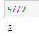
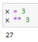
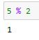
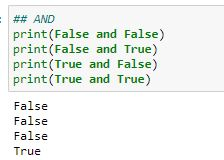
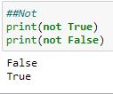
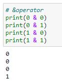
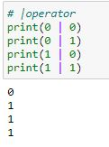

- 1.Introduction
- 2. Variables
- 3.Data types
- 4.Operators
- 5.Conditional_stmts
- 6.I/O_Operations
- 7.Iterative_stmts
- 8.Functions
- 8.1.Arguments
- 9.Sequences
- 10.Modules
- 11.Oops_Introduction
- 11.1.Methods
- 11.2.Inheritance
- 11.3.Polymorphism
- 11.5.Encapsulation
- 12.lambdas
- 13.Exception_Handling
- 14.File_Handling
- 15.Multi_Threading
- 16.Iterators_generators
- 17.Database_Management
Convenctions:
In an expression, The variables are refered as operands and the operation being performed is termed as operator.
Ex: In a + b
a , b -----> operands
+ -----> operator
1)Arithmetic Operators : :
+ -----> Perform Addition.
- -----> Perform subtraction.
* -----> Perform Multiplication.
/ -----> Perform Division.
// ------> The result of division is rounded off.
Ex:

The operation x to the power of y is carried out using ** operator.
Ex:

%(modulus) operator is used to compute the remainder.
Ex:


2)Assignment Operator : To assign a value to a variable or to assign the computed result to the variable.
= -----> Used to assign a value to the variable (Ex: x=10).
+= -----> To assign computed sum to a variable.
-= -----> To assign computed subtraction to a variable.
*= -----> To assign computed Multiplication to a variable.
/= -----> To assign computed Division to a variable.
//= -----> To assign computed float-division value to a variable.
%= -----> To assign value of remainder to a variable.
**= -----> To assign value of x to the power of y to a variable.

3)Unary Operator : - (temp = 23, temp = -23)
4)Relational operator / conditional operator :
i)Used for comparing two values.
ii)Generally used for evaluation of conditions in conditional statements or loops.
iii)Returns either True or False.
< ----> Less than.
<= ----> Less tahn or equal to.
> ----> Greater than.
>= ----> Greater than or equal to.
== ----> Equal to (Note: = is used for assignment i.e storing a value in a variable but == is used to check weather two values are equal or not.This returns either true or false.)
!= ----> Not Equal to.

5)Logical operators :
and ---> False if atleast one is false
or --->True if atleast one is true
not ---> Compliment/Reverse of given value
->used for combining two conditions



6)Bitwise operator :
~
&
|
^
<<
>>
If first bit is 0 then number is negative , If first bit is 1 then number is positive
a)Negation operator(~) (tilde) : Coverts 1's to 0's and vice versa (eg : 5 = 00000101 , ~5 = 11111010 )
FORMULA : ~x = - (x+1)
eg : x=5 , ~x = -6
b) & Operator :

eg: x=5 00000101
y=6 0000
x&y 0000
c) | Operator :

eg : x=5 00000101
y=6
d) ^
e) Left shift(<<) :
x = 10 0 0 0 0 1 0 1 0
x << 1 0 0 0 1 0 1 0 0 First bit is lost and data is moved left and last bit is replaced by 0
f)Right shift(>>) :
x = 10 0 0 0 0 1 0 1 0
x>>1 0 0 0 0 1 0 1 0 Last bit i lost and data is moved right and first bit is replaced by 0
7)Membership Operators :
in and notin k/w (Checking the availability or non availability of data)
eg : s1 = 'hi friends'
s2 = 'hi'
s3 = 'bye'
s2 in s1 : True
s3 in s1 : False
8)Identify Operators : is is not k/w (Weather the address is same or not)
eg : x = 5
y = 5
z = 6
id(x) = 180056344 (Location of x)
id(y) = 180056344(Location of y) (As value of y is same as x they are stored in same address)
x is y : True
z is x : False